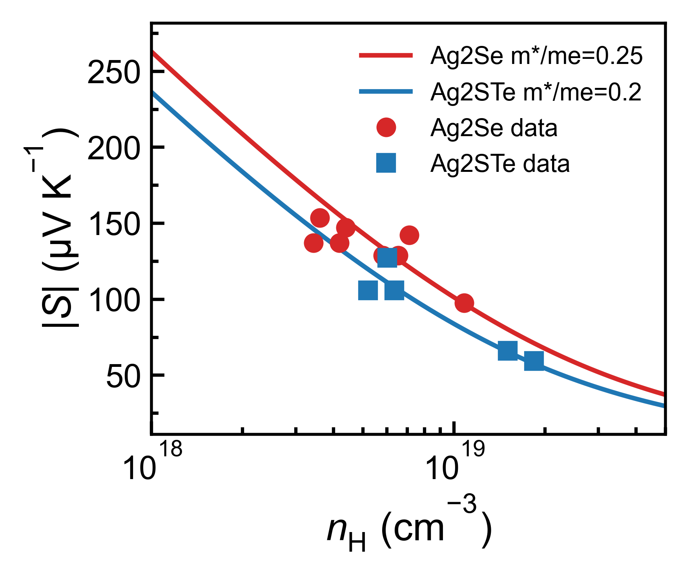
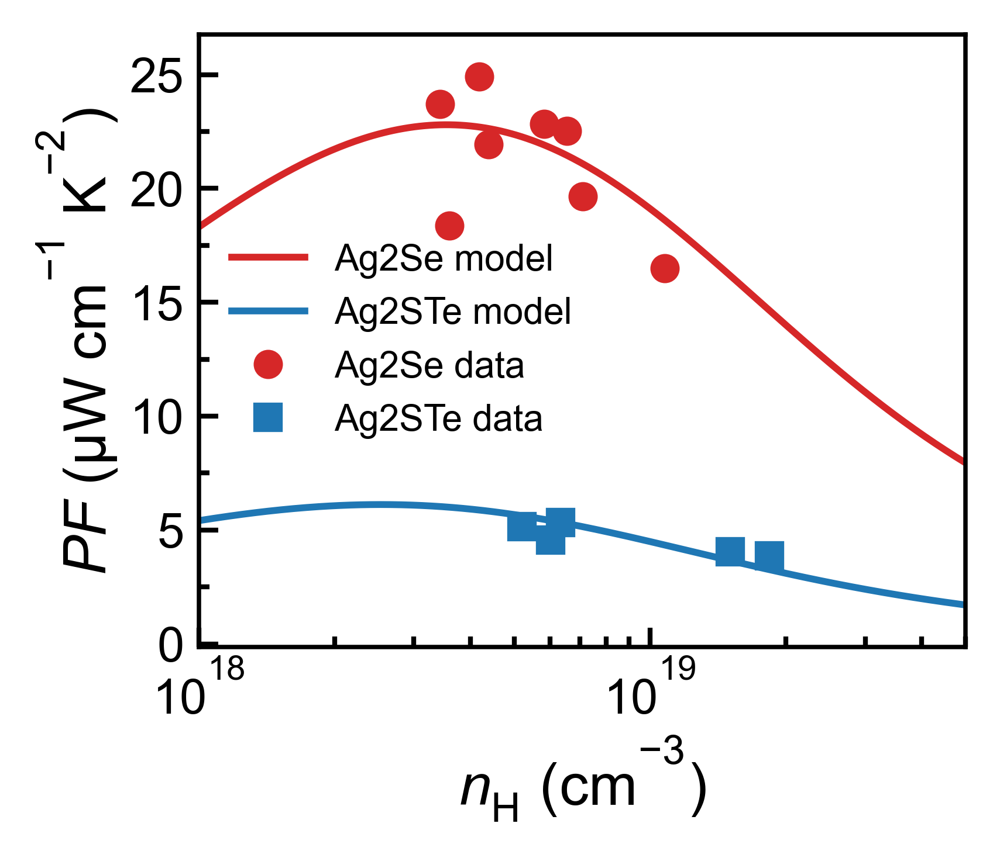
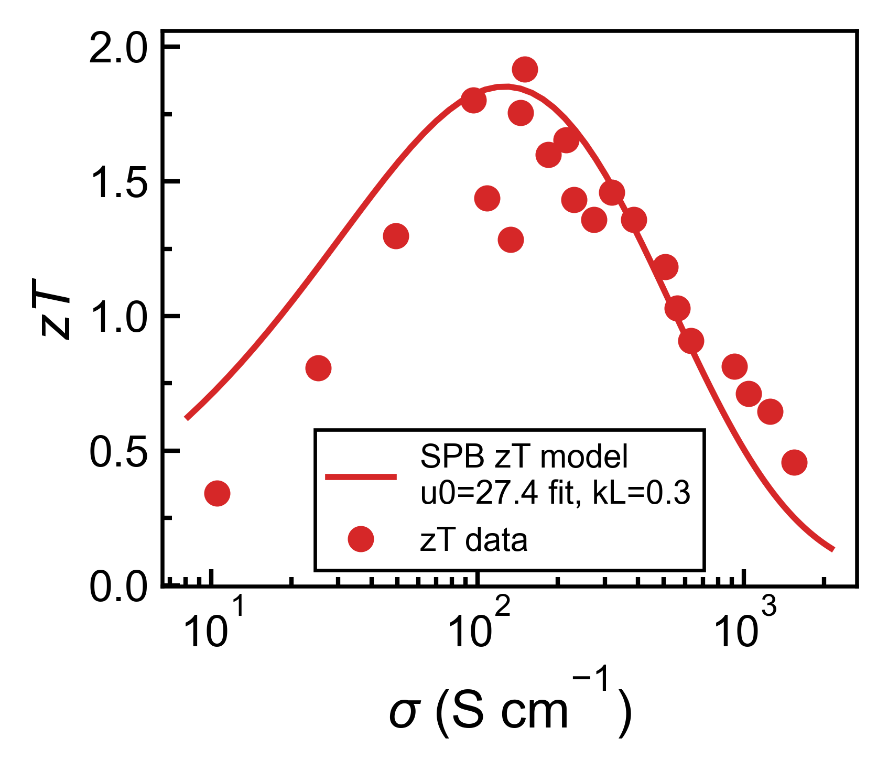
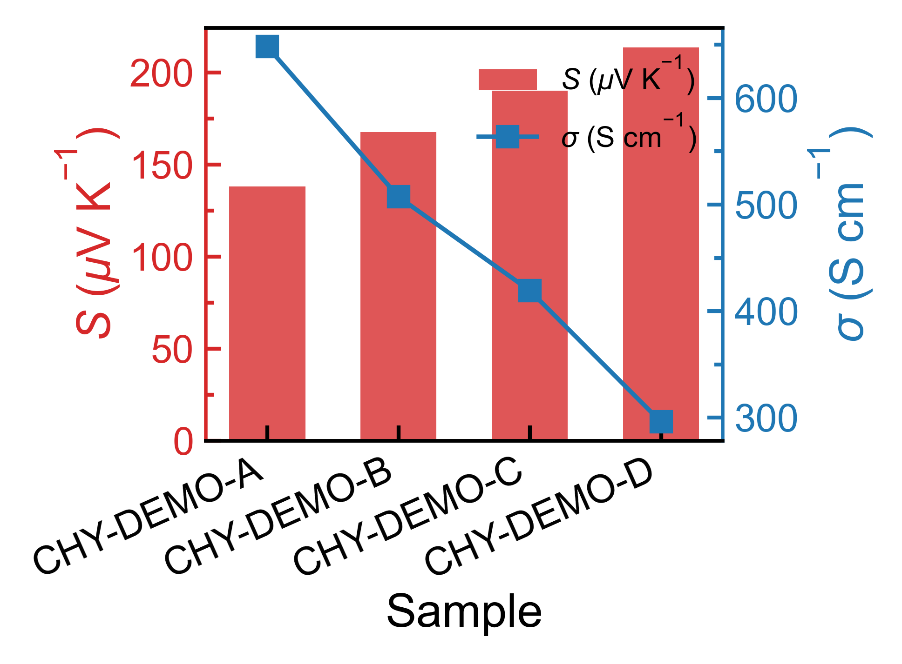

Thermoelectric Transport
Structure-property relationships, carrier transport, thermal conductivity, and ZT optimization.
Materials science | Thermoelectrics | Data workflows
I study thermoelectric transport in complex materials and build reproducible tools that turn measurements, metadata, and reference data into publication-ready analysis.
My interests sit at the boundary of crystal chemistry, transport measurements, and careful scientific computing.
Structure-property relationships, carrier transport, thermal conductivity, and ZT optimization.
Composition, defect chemistry, and phonon scattering in tetrahedrally bonded compounds.
Python pipelines for cleaning measurements, comparing samples, and producing consistent figures.
My workspace connects raw instrument exports, sample metadata, processed transport-property tables, reference literature, plotting recipes, and assessment scripts into one reproducible command-line flow.
ZEM, LFA, XRD, metadata ledgers, and cleaned sample tables are organized into traceable folders.
Conductivity, Seebeck coefficient, thermal conductivity, power factor, ZT, and lattice terms are derived consistently.
Pisarenko, power-factor, conductivity-axis, and zT views help compare measured behavior against transport models.
Reusable recipes render TE, XRD, flexible CSV/XLSX plots, and demo figures with a consistent visual style.
Reference PDFs, extracted tables, and processed features can be compared with local experimental results.
Deterministic ranking and trend scripts produce JSON, Markdown, and AI-ready prompts for research decisions.
Public summary only: raw experiment files, private keys, and unpublished sample details stay out of the homepage.




One `main.py` entry point launches analysis, TE plotting, XRD plotting, flexible recipes, SPB fitting, metadata sync, assessment, and agent workflows.
A CSV/TXT/XLSX plotting layer handles messy column names, multiple files, dual-axis figures, grouped bars, multi-panel views, and normalized export tables.
Local scripts combine processed lab features with reference data to rank samples, detect trends, and prepare evidence-grounded research summaries.
Journal, year. Replace this entry with your publication details and DOI link.
Use this space for short technical notes, datasets, code releases, or talk slides.
The fastest way to reach me is by email. You can also find code, notes, and project updates on GitHub.